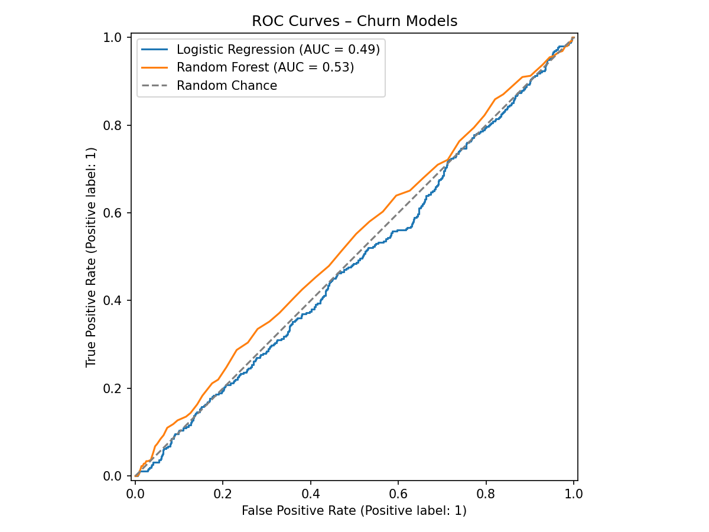

Project 4 · Machine Learning
Online Retail Customer Churn Prediction
End-to-end churn workflow using feature engineering, Logistic Regression and Random Forest models, ROC evaluation, and SHAP interpretation artifacts.
Pythonscikit-learnSHAPRandom ForestChurn Analytics
